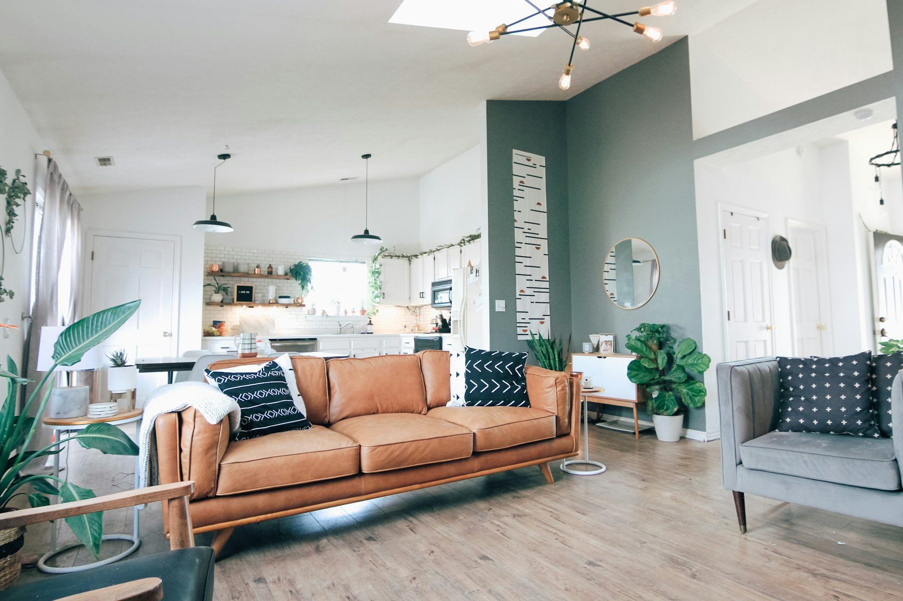
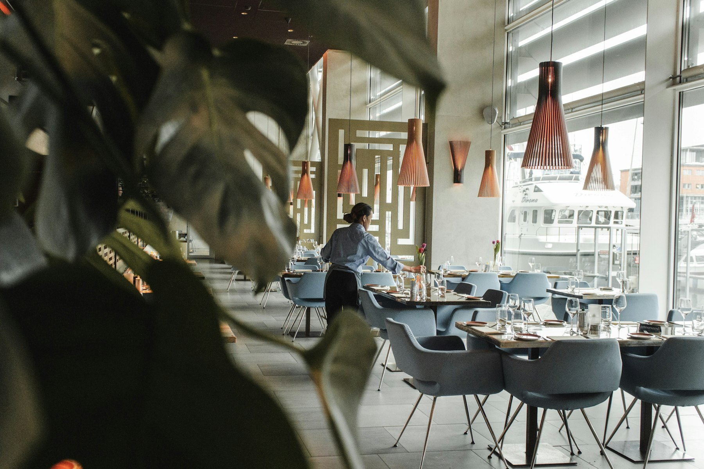
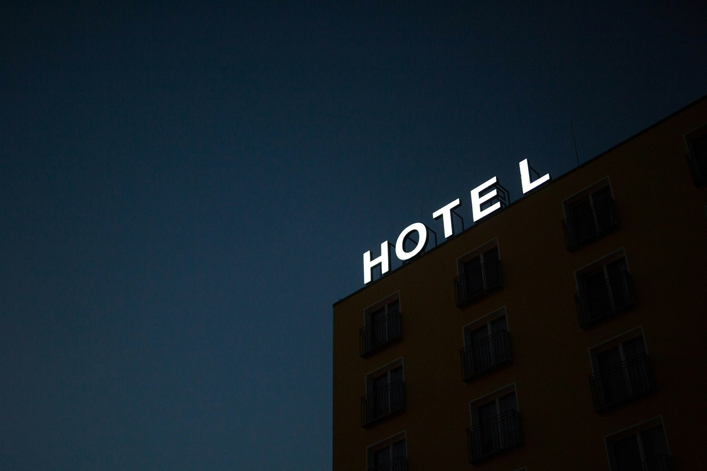

Тишина
Мы не включаем музыку в лобби и не торопим с выездом. Тишина — это не отсутствие звука, а часть сервиса.
О доме
Старый особняк в Хамовниках, который мы бережно превратили в отель. Без глянца и спешки — с уважением к дому и его гостям.
Наша история
История

В 2014 году мы нашли небольшой особняк в Тихом переулке. Дом был уставшим, но с характером: лепнина, дубовые двери, окна во двор, где росла старая яблоня. Мы не стали делать ремонт «под ключ» — позвали мастеров, которые умеют слушать стены.
Двенадцать номеров, библиотека, маленький ресторан. Мы оставили высокие потолки и скрип паркета, добавили льняные шторы, теплый свет и много книг. Нам хотелось, чтобы здесь можно было выдохнуть.
Анна и Михаил,
основатели «Тихого дома»
Во что мы верим
Мы не включаем музыку в лобби и не торопим с выездом. Тишина — это не отсутствие звука, а часть сервиса.
Помним, как вы пьёте кофе, и не спрашиваем дважды. Но не мешаем, если хочется побыть одному.
Без лишних кнопок и скрытых платежей. Завтрак, Wi-Fi и библиотека уже включены в стоимость.

«Хороший отель запоминается не стенами, а тем, как здесь себя чувствуешь».
Ирина Соколова, управляющая
Хроника
Мы не спешили расти. Зато каждый год что-то меняли к лучшему — для гостей и для дома.
После двух лет реставрации в доме появились первые двенадцать номеров и маленькая гостиная с камином.
Собрали две тысячи книг, поставили виниловый проигрыватель и поняли, что гости остаются здесь дольше, чем планировали.
Разбили клумбы, сохранили старую яблоню и поставили шесть столиков для завтраков на воздухе.
Обновили все комнаты: льняное бельё, локальная керамика, кофемашины и больше полок для книг.
Завтраки возглавил Павел Морозов. Теперь к нам приезжают даже те, кто не бронирует номер.
Те же стены, та же яблоня, новые истории. Мы по-прежнему рады каждому, кто ищет тишину.

Приезжайте
Мы оставили для вас свет, книгу и свободную комнату.
Команда
Управляющая
Если нужно достать билет в театр за час или найти лучший кофе в округе — это к Ирине.
Шеф-повар
Сырники, которые умеют ждать, и омлет с зеленью, ради которого стоит проснуться.
Консьерж
Знает все тихие места в радиусе трёх километров и не расскажет о них никому лишнему.